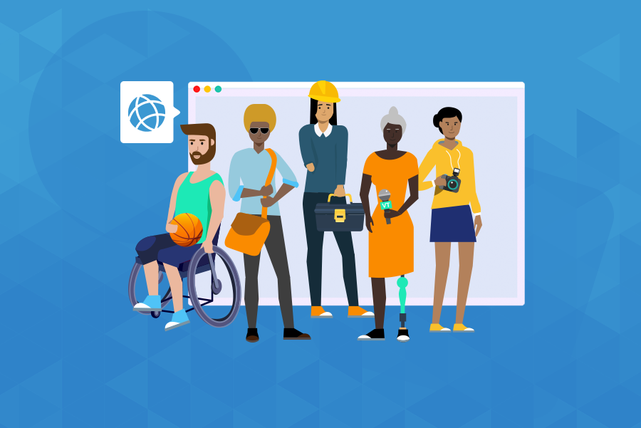

Sobre o site
Quanto mais anos se passam mais existem pessoas que possuem alguma deficiência, tanto auditiva quanto visual. E existem 8,4% da população brasileira que possuem essas deficiências.
A maiorias dos sites não possuem recursos assistivos para cooperar com essas pessoas, e elas ficam simplesmente limitada á sites do governo e bancos, então fizemos esse site de receitas para poder ajudar esse grupo de pessoas que possuem deficiência.
Nosso site possui três API que são: Narração para pessoas que tem deficiência visual, Libras para quem possui deficiência auditiva e Alto contraste para pessoas que possuem baixa visão.
